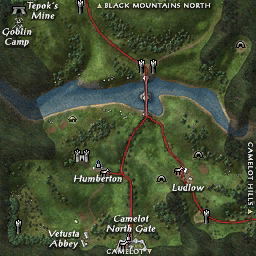
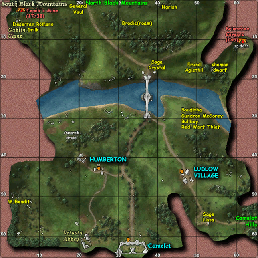
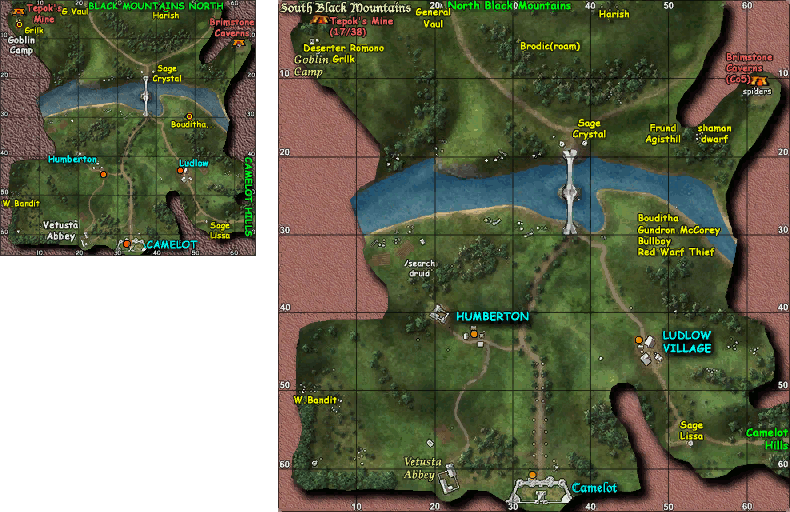
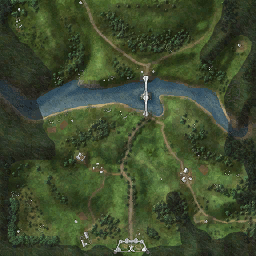
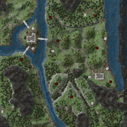

-[Map Pack]-
The Map Pack option allows you to choose one of several custom map sets to replace the ones that appear in the /map window. The amount of detail in the custom maps is far greater in many cases than that available in the original Mythic maps.
The Map window will appear when you click on the button labeled "Map" in the Main Menu or Command windows. You can also type the keyword /map to open the map window.
- Disable
When the Map Pack is disabled, Mythic's map set containing the original 256x256 sized images is used.

Style 1
This style map set contains Valmerwolf's 256x256 sized images.

Style 2
This style map set contains Valmerwolf's 512x512 sized images.
Note that the 512x512 NF maps are LOW QUALITY.

Style 3
This style map set contains a mix of Valmerwolf's 256x256 and 512x512 sized images.
Note that the 512x512 NF maps are LOW QUALITY.

Style 4
This style map set contains Tekener's 256x256 sized images. These maps have no NPC, mob, zone, or any other label markings on them.

Style 5
This style map set contains Tekener's 256x256 sized images. The Briefine, Jamtland Mountains, and Pennine Mountains Frontier maps have been modified in this map set to add a "red dot" at the approximate location of the Doppelganger Mobs.

Additional Information
The custom map sets that you see in game are actually the result of several peoples work.
Valmerwolf
The labels and markers used to create the custom maps you actually see in the game were put together by Valmerwolf. They provide more detailed information than what is available in the default Mythic maps. They are available for download directory from Valmerwolf's website.
Tekener
Many of the blank maps used by Valmerwolf to create the final custom maps were created by Tekener. They are available for download directly from Tekener's website.
MastaMappa
The original vector maps for many of the custom maps were created by MastaMappa. They are available for download directory from MastaMapps's website.